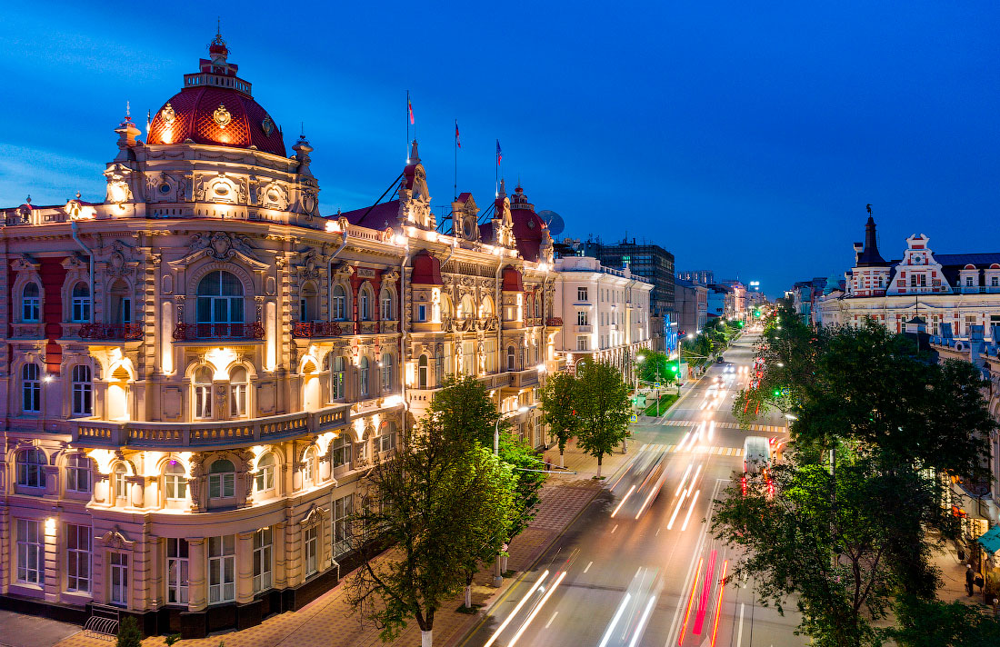
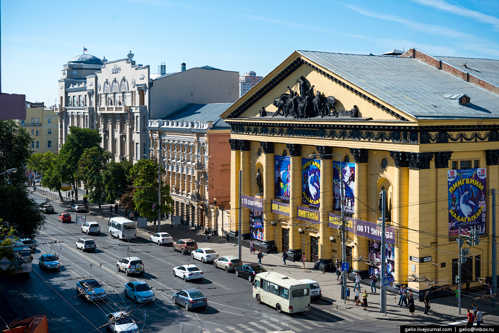
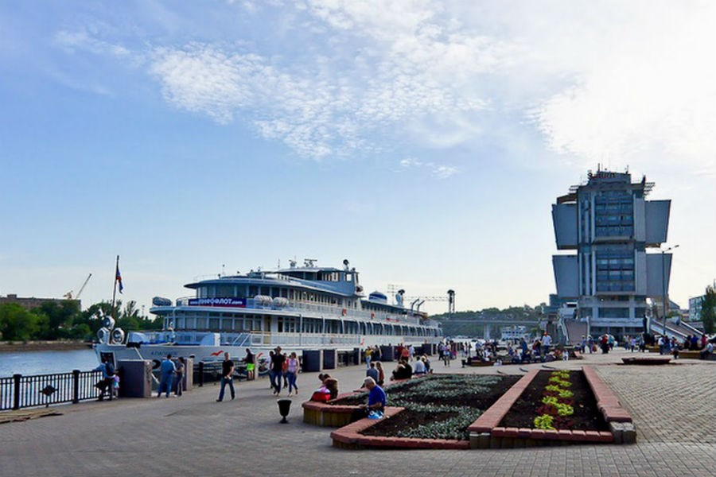

О городе
Основан в 1761 году как крепость Димитрия Ростовского. Название дано по церкви во имя святого Димитрия, который последние семь лет своей жизни был митрополитом Ростовским и Ярославским, а в 1757 году канонизирован Русской православной церковью. При крепости, называвшейся в быту Ростовской, возникла слобода, которую стали называть просто Ростов; в 1796 году она была преобразована в город с тем же названием. Позже, для отличия от древнего Ростова, этот город стали именовать Ростов-на-Дону

Большая Садовая улица

Цирк

Набережная